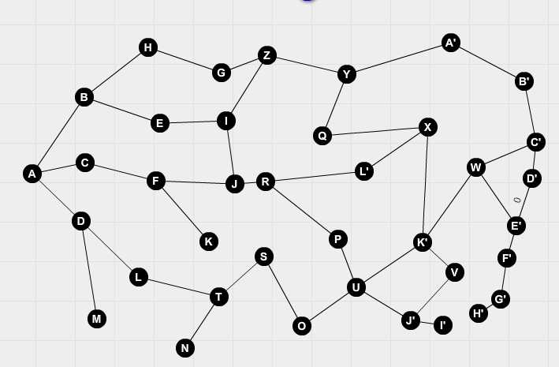

<div class="container">
  <div class="row">
    
    <form (ngSubmit)="getShortestPath(pathForm)" #pathForm="ngForm">
      <br><label>Select the destination node</label><br>
      <div class="form-group">
        <span>Get shortest path from A to </span>
        <select  id="selectedOption"
                 ngModel
                 name="selectedOption">
          <option *ngFor="let endPoint of targetNodes| slice:1">
            {{endPoint}}</option>
        </select>
      </div>
      <br><button class="button button-default" type="submit">Submit</button><br>
    </form>
    <br>
  </div>
  <div class="row">
    <table class="table table-bordered">
      <thead>
      <tr>
        <th scope="col">SOURCE NODE</th>
        <th scope="col">DESTINATION NODE</th>
        <th scope="col">ROUTING NODES</th>
        <th scope="col">SHORTEST DISTANCE</th>
      </tr>
      </thead>
      <tbody>
      <tr *ngFor="let path of shortestPaths">
        <th>{{path.sourceNode}}</th>
        <td>{{path.destinationNode}}</td>
        <td>{{path.routingNode}}</td>
        <td>{{path.distance}}</td>
      </tr>
      </tbody>
    </table>
  </div>
</div>
